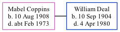

Mabel Violet Deal (née Coppins) 1908 - c1973
[ Home ] | [ Calendar ] | [ Surnames Index ] | [ Family History ], Mabel Coppins, the wife of William Richard Deal (the second cousin once-removed on the father's side of Nigel Horne), was born in Upstreet, Kent, England on Aug 10, 1908<span class="citation">1,2,3,4</span> and baptized in Chislet, Kent, England on Sep 11, 1908. She married William (a chauffeur-handyman) at St Mary's Church, Church Lane, Chartham, Kent, England on Jul 3, 1928<span class="citation">5</span>.</p><p>Throughout her life, she lived at Mill Cottages, Barham, Kent on Apr 2, 1911<span class="citation">1</span>; and on Harwood Hall, Harwood Hall Lane, Hornchurch, Essex, England on Sep 29, 1939<span class="citation">2</span>. <p>She died <i>c.</i> Feb 1973 in Bridge, Kent<span class="citation">4</span>.
Citations
- 1911 Census for England & Wales - Findmypast (was age 2 and the daughter of the head of the household)
- 1939 Register - Findmypast (was recorded at this address)
- England & Wales births 1837-2006 - Findmypast
- England & Wales deaths 1837-2007 - Findmypast
- England Marriages 1538-1973 - Findmypast
Media
Kent, Canterbury Archdeaconry marriages 1538-1928 - GBPRS/CANT/M/97057865/2
England Marriages 1538-1973 - R_848404251/2
Kent, Canterbury Archdeaconry banns 1754-1928 - GBPRS/CANT/M/94079114/2
England & Wales deaths 1837-2007 - BMD/D/1973/1/AZ/000345/068
England & Wales births 1837-2006 - BMD/B/1908/3/AZ/000130/326
1939 Register Transcription - TNA-R39-1529-1529D-004-29
1911 Census for England & Wales - GBC/1911/RG14/04313/0019/5
England & Wales marriages 1837-2005 - BMD/M/1928/3/AZ/000278/024
Family Tree
Generated by Ged2Site. Last updated on Jul 20, 2025